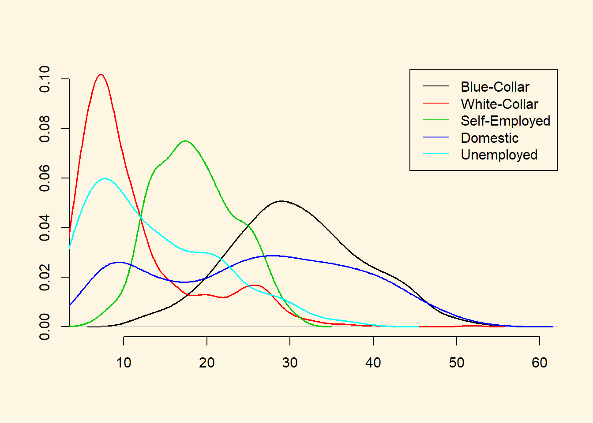

5.2 Solutions
5.2.0.1 Exercise 1
Create a vector of a fair die and a vector of a loaded die with (25) observations such that you cannot distinguish the dice with a difference in means test. Carry out the t-test.
# set random number generator
set.seed(123456)
# fair die
die1 <- as.integer(runif(25, min = 1, max = 7))
# loaded die
die2 <- as.integer(rnorm(25, mean = 5, sd = 1.5))
die2[which(die2 < 0)] <- 0
die2[which(die2 > 6)] <- 6
# tables of proportions in each category for both dice
table(die1) / sum(table(die1))die1
1 2 3 4 5 6
0.16 0.16 0.20 0.08 0.16 0.24 table(die2) / sum(table(die2))die2
1 2 3 4 5 6
0.08 0.04 0.16 0.20 0.24 0.28 # check whether difference in means is detectable or not
t.test(die1, die2)
Welch Two Sample t-test
data: die1 and die2
t = -1.4118, df = 46.578, p-value = 0.1647
alternative hypothesis: true difference in means is not equal to 0
95 percent confidence interval:
-1.6492142 0.2892142
sample estimates:
mean of x mean of y
3.64 4.32 Assuming that higher rolls of the die are better, the loaded die gives us better results than the fair die. The fair die has a mean of 3.64 and the loaded die as mean of 4.32. We cannot reject the null hypothesis that there is no difference between the fair die and the loaded die. The p value is 0.16 which is larger than our default alpha level of 0.05.
5.2.0.2 Exercise 2
Re-create the dice but increase the number of observations to 1000. Does the result of the t test change?
# set random number generator
set.seed(123456)
# fair die
die1 <- as.integer(runif(1000, min = 1, max = 7))
# loaded die
die2 <- as.integer(rnorm(1000, mean = 5, sd = 1.5))
die2[which(die2 < 0)] <- 0
die2[which(die2 > 6)] <- 6
# tables of proportions in each category for both dice
table(die1) / sum(table(die1))die1
1 2 3 4 5 6
0.172 0.155 0.168 0.176 0.161 0.168 table(die2) / sum(table(die2))die2
0 1 2 3 4 5 6
0.006 0.016 0.071 0.164 0.239 0.252 0.252 # check whether difference in means is detectable or not
t.test(die1, die2)
Welch Two Sample t-test
data: die1 and die2
t = -12.72, df = 1892.4, p-value < 0.00000000000000022
alternative hypothesis: true difference in means is not equal to 0
95 percent confidence interval:
-1.009909 -0.740091
sample estimates:
mean of x mean of y
3.503 4.378 The difference in means is clearly detected now. The p value is extremely small. Hence, we can reject the null hypothesis that there is no difference in means.
The difference in this exercise and the previous one is the sample size. When we increase the sample size, our standard error decreases. Therefore, we can detect a smaller effects (differences). The larger the sample size, the easier it is to detect significant differences. If the sample size is very very large, everything becomes significant (we can detect even minuscule differences).
5.2.0.3 Exercise 3
Ordinary Economic Voting Behavior in the Extraordinary Election of Adolf Hitler Download and then load who_voted_nazi_in_1932.csv.
df <- read.csv("who_voted_nazi_in_1932.csv")5.2.0.4 Exercise 4
Estimate the means and illustrate the distribution of potential voter shares by class.
# self-employed
mean(df$shareself)[1] 18.58871# blue-collar
mean(df$shareblue)[1] 30.82347# white-collar
mean(df$sharewhite)[1] 11.42254# domestically employed
mean(df$sharedomestic)[1] 25.44283# unemployed
mean(df$shareunemployed)[1] 13.72245# illustrate distributions
plot(density(df$shareblue),
main ="",
xlab="",
ylab="",
ylim = c(0, 0.1),
bty = "n",
lwd = 1.5)
lines(density(df$sharewhite), col = 2, lwd = 1.5)
lines(density(df$shareself), col = 3, lwd = 1.5)
lines(density(df$sharedomestic), col = 4, lwd = 1.5)
lines(density(df$shareunemployed), col = 5, lwd = 1.5)
legend("topright", col = c(1,2,3,4,5), lty = "solid",
c("Blue-Collar", "White-Collar", "Self-Employed",
"Domestic", "Unemployed"))
5.2.0.5 Exercise 5
Estimate the mean vote shares for the Nazis in districts where the share of blue-collar voters was above the mean (30.82) and below it.
# many blue-collar workers
share.in.blue.high <- mean(df$sharenazis[ df$shareblue > mean(df$shareblue) ])
share.in.blue.high[1] 41.97132# fewer blue-collar workers
share.in.blue.low <- mean(df$sharenazis[ df$shareblue < mean(df$shareblue) ])
share.in.blue.low[1] 41.196735.2.0.6 Exercise 6
Construct confidence intervals around the means.
# ci blue-collar workers high
se.blue.high <- sd(df$sharenazis[ df$shareblue > mean(df$shareblue) ]) /
sqrt( length(df$sharenazis[ df$shareblue > mean(df$shareblue) ]) )
# lower bound
share.in.blue.high - 1.96 * se.blue.high[1] 40.90744# upper bound
share.in.blue.high + 1.96 * se.blue.high[1] 43.03521# ci blue-collar workers low
se.blue.high <- sd(df$sharenazis[ df$shareblue < mean(df$shareblue) ]) /
sqrt( length(df$sharenazis[ df$shareblue < mean(df$shareblue) ]) )
# lower bound
share.in.blue.high - 1.96 * se.blue.high[1] 40.75962# upper bound
share.in.blue.high + 1.96 * se.blue.high[1] 43.183035.2.0.7 Exercise 7
Are there differences between the groups? Use the appropriate statistical test to find out.
# t-test for difference in means
t.test(df$sharenazis[ df$shareblue > mean(df$shareblue) ],
df$sharenazis[ df$shareblue < mean(df$shareblue) ])
Welch Two Sample t-test
data: df$sharenazis[df$shareblue > mean(df$shareblue)] and df$sharenazis[df$shareblue < mean(df$shareblue)]
t = 0.94153, df = 673.93, p-value = 0.3468
alternative hypothesis: true difference in means is not equal to 0
95 percent confidence interval:
-0.8407583 2.3899379
sample estimates:
mean of x mean of y
41.97132 41.19673 We cannot reject the null hypothesis that there is no difference in means.
5.2.0.8 Exercise 8
Calculate t values and p values on your own (without using the t test)
# standard error of the difference in means
se.fd <- sqrt( (var(df$sharenazis[ df$shareblue > mean(df$shareblue)]) /
length(df$sharenazis[ df$shareblue > mean(df$shareblue)])) +
(var(df$sharenazis[ df$shareblue < mean(df$shareblue)]) /
length(df$sharenazis[ df$shareblue < mean(df$shareblue)])))
# t value
t.val <- (share.in.blue.high - share.in.blue.low) / se.fd
# p value
(1- pnorm(t.val))*2[1] 0.34643315.2.0.9 Exercise 9
Interpret your results substantially.
A common hypothesis is that it was blue-collar workers who voted en-masse for Hitler. However, when comparing districts where the share of blue-collar workers is above the mean to districts where the share is below the mean, we do not see any difference in the vote share of Nazis.
Based on this comparison, we would not conclude that a high share of blue-collar workers made the difference between a good and a bad result for the National Socialist Party.
5.2.0.10 Exercise 10
Estimate the mean vote shares for the Nazis in districts where the share of white-collar voters was above the mean (11.423) and below it.
# clear workspace
rm(list=ls())
# re-load data
df <- read.csv("who_voted_nazi_in_1932.csv")
# vector nazi vote share in places where white-collar workers was above the mean
n.share.high.wc <- df$sharenazis[ df$sharewhite > mean(df$sharewhite) ]
# vector nazi vote share in places where white-collar workers was below the mean
n.share.low.wc <- df$sharenazis[ df$sharewhite < mean(df$sharewhite) ]
# high white-collar group mean
mean(n.share.high.wc)[1] 37.83325# low white-collar group mean
mean(n.share.low.wc)[1] 43.385765.2.0.11 Exercise 11
Construct confidence intervals around the means.
We do this first for the group with a share of white-collar workers.
# number of districts with high white-collar share
num.high.wc <- length(n.share.high.wc)
# standard error for high group
se.high.wc <- sd(n.share.high.wc) / sqrt(num.high.wc)
# lower bound
mean(n.share.high.wc) - 1.96 * se.high.wc[1] 36.81174# upper bound
mean(n.share.high.wc) + 1.96 * se.high.wc[1] 38.85476Now, we construct the confidence interval around the mean for the group with a low share of white-collar workers.
# number of districts with low white-collar share
num.low.wc <- length(n.share.low.wc)
# standard error for low group
se.low.wc <- sd(n.share.low.wc) / sqrt(num.low.wc)
# lower bound
mean(n.share.low.wc) - 1.96 * se.low.wc[1] 42.32525# upper bound
mean(n.share.low.wc) + 1.96 * se.low.wc[1] 44.446275.2.0.12 Exercise 12
Are there differences between the groups? Use the appropriate statistical test to find out.
t.test(n.share.high.wc, n.share.low.wc)
Welch Two Sample t-test
data: n.share.high.wc and n.share.low.wc
t = -7.3909, df = 612.69, p-value = 0.0000000000004802
alternative hypothesis: true difference in means is not equal to 0
95 percent confidence interval:
-7.027862 -4.077152
sample estimates:
mean of x mean of y
37.83325 43.38576 The t test shows that the difference in means is statistically significant. In districts with a high share of white-collar workers the share for the Nazis is lower.
5.2.0.13 Exercise 13
Calculate t values and p values on your own (without using the t test)
# variance in high white-collar group
var.high.wc <- var(n.share.high.wc)
# variance in low white-collar group
var.low.wc <- var(n.share.low.wc)
# standard error of the difference in means
se.fd <- sqrt( ((var.high.wc/num.high.wc) + (var.low.wc/num.low.wc)) )
# t value
t.val <- (mean(n.share.high.wc) - mean(n.share.low.wc)) / se.fd
# p value
pnorm(t.val) * 2[1] 0.00000000000014579935.2.0.14 Exercise 14
Interpret your results substantially.
We reject the null hypothesis that there is no difference between districts with a low share of white-collar workers and districts with a high share of white-collar workers. In districts where the share of white-collar workers was high, the share for the Nazis was 5.6 percentage points lower.